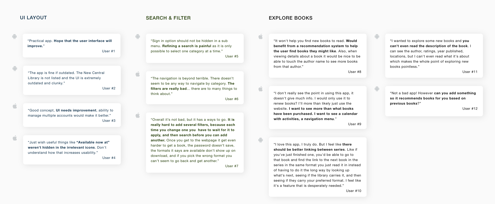
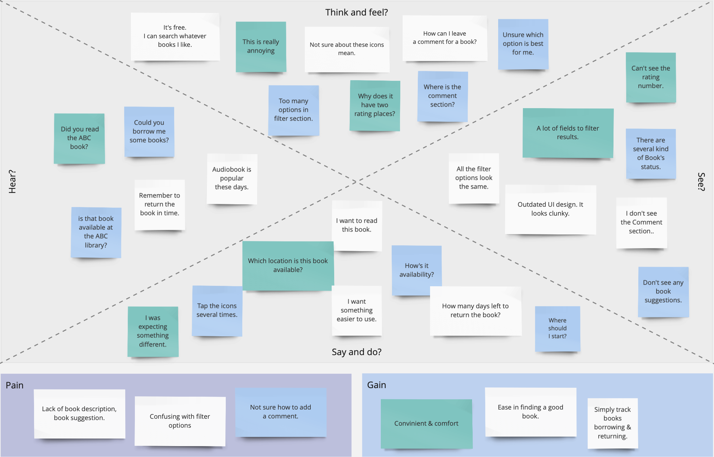
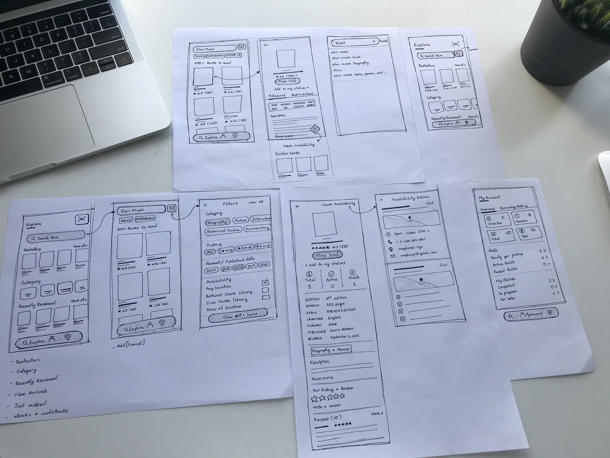
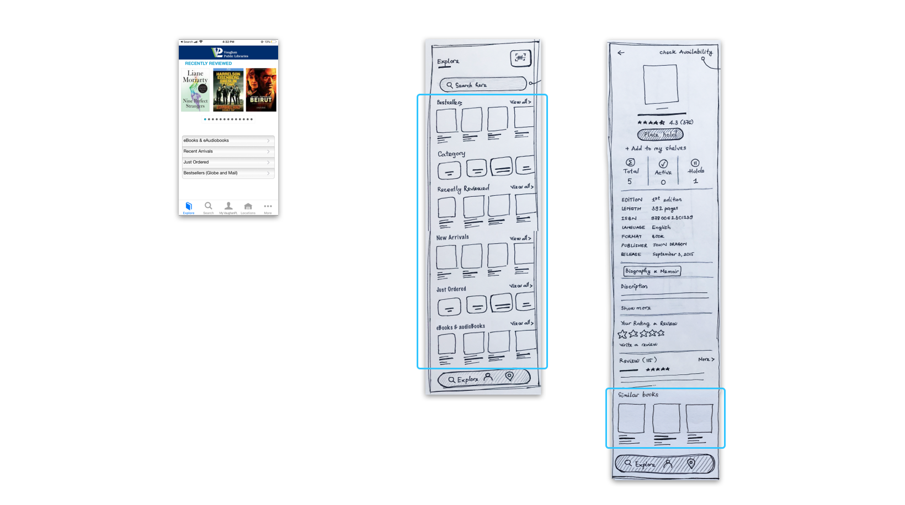
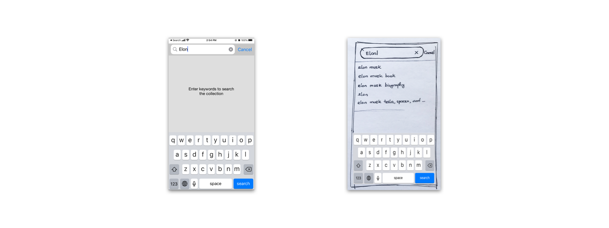
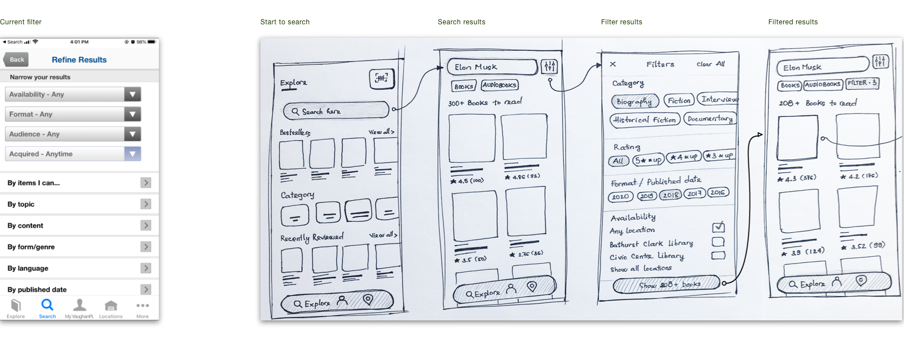
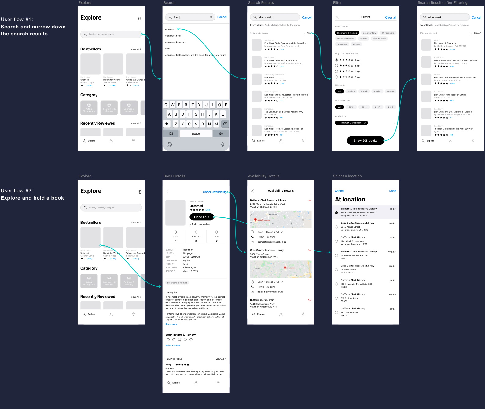
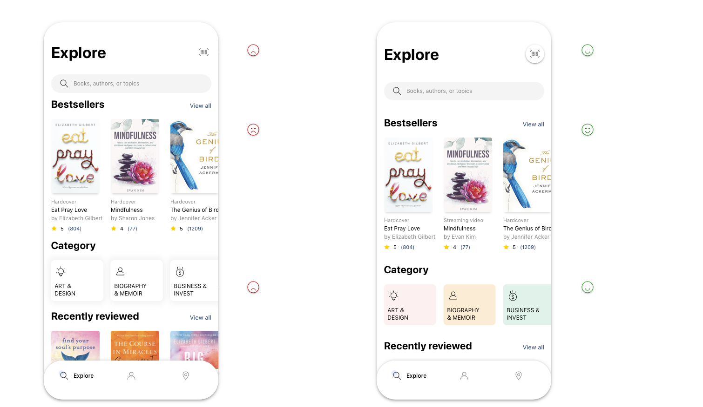

Redesign VPL App
Role: UX Designer
Time: 2020 / 2021
Introduction
Vaughan Public Library (VPL) is a public library system in Ontario, Canada, offering access to information and services across 10 branches—both physical and virtual (via vaughanpl.info)—along with a mobile app. While the app is notably practical, I found the search feature somewhat complex, and the interface could benefit from a more attractive design. As a personal project titled Solve the Problem I Met in Life, I decided to redesign the app. I believe a fresh look would enhance usability and make the experience more enjoyable for users.
The process
User research
Target users & Use cases
I started the project by defining the main target audience group: the LOCALS. I focused on establishing a thorough understanding of the target audience acquired from their behavioral patterns, possible needs and goals.
- Follow that, I conducted an analysis of the challenges they might be facing and here are the following use cases for them:
- Search/browse books
- Get descriptions & reviews for books
- Borrowing & returning books
- Find & download ebooks, audiobooks
- Check availability & map the locations
- Check due date & renew
- Check branch hours or get directions
Users feedback
Besides, reading the users feedback for this app on Google Play and App Store helps me get more insight about what's good and what needs to be improved in order to meet the users expectation. Based on the collected feedback, I grouped those comments into three main groups: UI pain point, Search & Filter pain point, and Explore books pain point. The followings are several key takeaways from that.
- UI Layout. Most users commented that the app provided the basic features but it needs to be improved the UI, that they don't like the look. It feels like 80s design, clunky and outdated.
- Search & Filter. There are many filtering options that allows users to narrow down a number of results, however these options makes them confuse and they're not sure which criteria should be used. Furthermore, it is only possible to select one category at a time.
- Explore books. As some comments said that it's hard to find a new book to read since it's lack of book's description and reader's reviews as well. Also, there are many suggestions about adding the "book suggestion" feature which based on the previous books or books from the same series/author that they had read before. That's kind a good idea to think about.
User interview
- I conducted quick interviews with 3 users to gain deeper insight about their experience with this app. Some evaluative questions were given out:
- Why do you use VPL app? What do you use it for?
- How often do you use the app?
- What is your main goal when using the app?
- How do you find a new book to read?
- Is there anything you often look for on the app that is missing or hard to find?
Key findings:
- Ingeneral, users noted that this is a convinient and handy app, it does the basics but it's not intuitive much.
- From the functions, experience related to finding a book, including searching & filtering the results got the bad comments. Follows users, they can quickly find exactly the book they need unless somebody recommended them before, otherwise, they felt impatient and frustrated sometimes during searching process.
Empathy map
Pain points
- Lack of book suggestion in Explore screen and below of each book's details. On Explore, it just shows Recently Reviewed Books, to see the others such as New Arrivals / Just Ordered / Bestsellers / eBooks, users have to select to see.
- No search suggest drop-down list feature to provide options to select.
- Can't complete filtering search at once. Each time you change one you have to wait for it to apply, and then search before you can add another.
Ideate
Wireframing
Starting from the pain point, I made several iteration sketches to find solutions for solving the problems and introduce new features.
Design improvements
1. Showing more books suggestions
Encourage users' engagement with book recommendations by presenting them prominently, segmenting suggestions into clear categories. In this way, it will increase the ability to interact with suggestions of users and provide a valuable source of books for them. On the Explore screen, users now can quickly browse the highlighted books just by swiping to the left on each book's category. Similarly, listing recommended books right below of book details so that it will be able to direct users to items relevant to their interest.
2. Efficient search with suggest drop-down options
Showing the user shortcuts, while the query is typed into a text box. It provides them options to select. The suggested queries then enable the users to complete the required search quickly.
3. Adjust Search and minimize Filter function
Showing the user shortcuts, while the query is typed into a text box. It provides them options to select. The suggested queries then enable the users to complete the required search quickly.
Design
Mid fidelity wireframes
High fidelity wireframes
Usability test and revision
Throughout the visual design process, I tested layout screens simultaneously on the mobile device to identify any usability problems. When finished, I conducted usability testing with three users to learn if participants are able to complete specified tasks successfully and also find out how satisfied they are with the layouts.
By watching them navigate the app, also listening their concerns, I realized there are two common things made them quite confuse.


Improvements
| Pain points | Before | After |
|---|---|---|
| Easily find book recommendation / book suggestions | 3/5 | 5/5 |
| Quickly search with drop-down options | 0/5 | 5/5 |
| Complete filtering search results at once | 0/5 | 5/5 |
| Efficiently use filter criterias at the first time | 2/5 | 5/5 |
Some other usability updates
Takeaways
From this case study, I learned that to build a better product, iterative design is a must need. Although it's still lacking in many ways, I hope I have enhanced myself in learning and practicing UX. What I would do in further step would be creating the tablet version for this app. I know that besides young person, there are many elderly people also frequently use this library app, and the best way for them to use it is via a table, which provides a clear and widescreen to navigate.